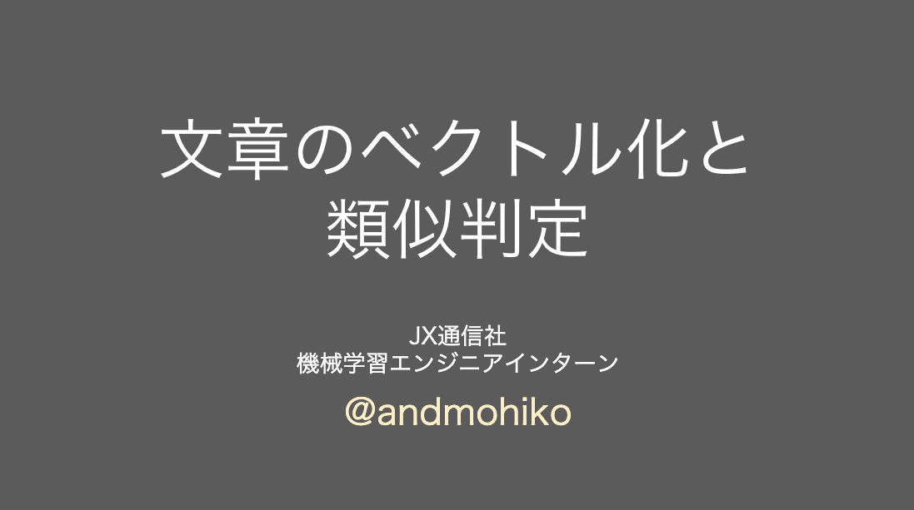

<section class="work-container">
  <div class="work-content">
    <h1>works</h1>
    <div class="work-items">
      <div class="work-card transition">
        <a href="https://speakerdeck.com/andmohiko/wen-zhang-falsebekutoruhua">
          
        </a>
        <h2>文章のベクトル化と類似判定</h2>
      </div>

      <div class="work-card transition">
        <a href="https://qiita.com/andmohiko/items/e185cbb59d9c32e6dd6a">
          
        </a>
        <h2>ポケモンをデータ分析してみた</h2>
      </div>

      <div class="work-card transition">
        <a href="https://www.work-school.com/courses/5/">
          
        </a>
        <h2>オンライン学習サービスの教材</h2>
      </div>

      <div class="work-card transition">
        <a href="https://speakerdeck.com/andmohiko/predicting-categories-of-news-articles">
          
        </a>
        <h2>ニュース記事のカテゴリー分類</h2>
      </div>
    </div>
  </div>
</section>